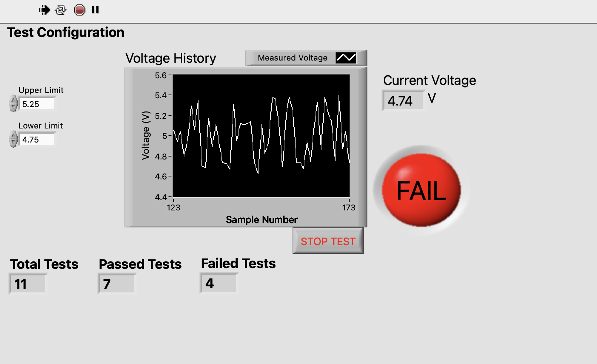
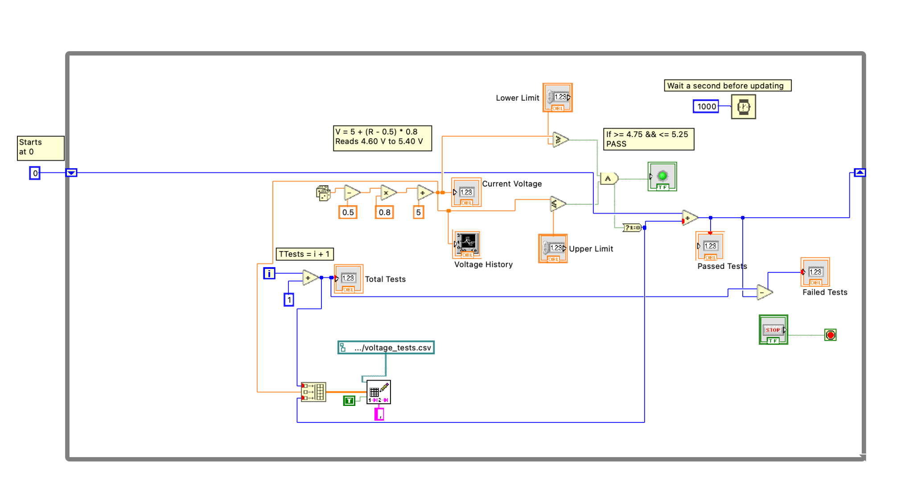

Test automation · Graphical programming
Automated Voltage Testing & Monitoring
A LabVIEW application that simulates voltage measurements, checks each reading against acceptance limits and records the results.
- Type
- Desktop VI / simulated instrument
- Context
- Independent learning project
- Tools
- NI LabVIEW, CSV, Apple Numbers
- Hardware
- None; generated readings only

Why I built it
I wanted a practical introduction to automated testing and LabVIEW's dataflow programming model. The idea was to simulate part of an electronics manufacturer's voltage-testing process, where measured values must stay within an acceptable range.
The application reads one generated voltage at a time, determines whether it passes, updates a live display and writes the result to a CSV file that can be inspected afterward.
How the VI works
The generator uses LabVIEW's random number function. In the example shown, the nominal voltage is set to 5 V and each sample is calculated as:
V = 5 + (R − 0.5) × 0.8
With R ranging from 0 to 1, this produces simulated readings from approximately 4.60 V to 5.40 V. A While Loop repeats the test with a 1000 ms wait between iterations.
The diagram shown uses a 5 V numeric constant for nominal voltage. Upper and lower acceptance limits are configurable from the front panel.
Acceptance logic
The front panel provides lower and upper voltage limits. A measurement passes when it is greater than or equal to the lower limit and less than or equal to the upper limit.
For example, the displayed defaults are 4.75 V and 5.25 V. A reading of 4.74 V falls below the lower limit, so the status indicator shows FAIL.
The program tracks total, passed and failed tests. A shift register carries the passed count across loop iterations, while failed tests are calculated as total minus passed.

Recording the results
Each test records its number, measured voltage and numeric pass/fail result. The VI uses Write Delimited Spreadsheet with append enabled, so running another test does not erase the previous measurements.
I open the exported CSV in Apple Numbers to review the readings and format the pass/fail results. This separates the data collection step from the analysis and presentation.
A screenshot of the CSV in Numbers can be added here after one is captured. The current page uses only the two actual LabVIEW screenshots.
What I learned
Building this introduced me to the LabVIEW dataflow model, While Loops, arithmetic and comparison nodes, Boolean operations, shift registers and file I/O.
The current version is intentionally a simulation: it does not connect to a DAQ device or physical voltage sensor. A future extension would replace the random-number generator with actual measurement hardware while preserving the limit checks and logging workflow.
See it in action
These are screenshots from the working LabVIEW VI. A short screen recording and the VI project files can be added to a public GitHub repository without needing to recreate the instrument as a web app.